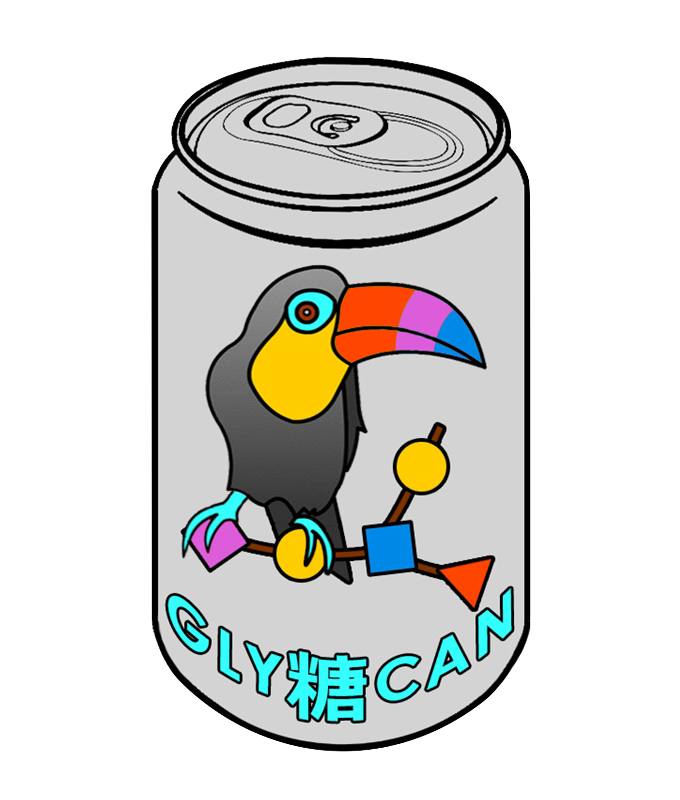

GlycanBuilder2 1.0.0.0_beta
A glycomic tool for building glycan structures. GlycanBuilder2 is part of the GlyTouCan project (
https://www.glytoucan.org/
). For questions and comments please contact:
e15d5605@soka-u.jp